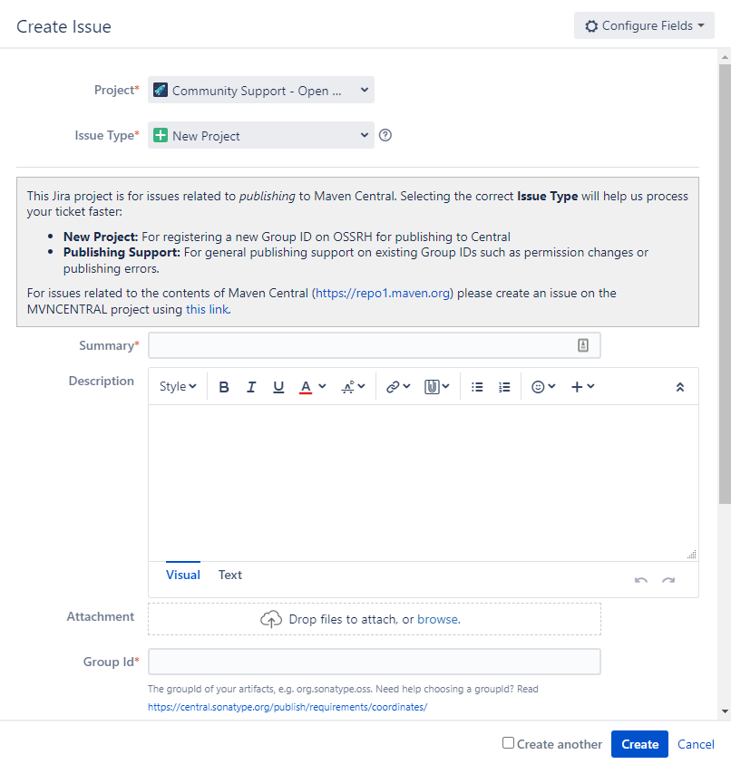

Publishing Java Packages to Maven Central Repository
Recently, I migrated my robotics team’s custom libraries from git submodules to importing with gradle, simplifying the process for end-users to utilize our libraries.
Through this project, I discovered the challenge of deploying packages to the Maven Central Repository.
Rather than the simplicity you find with package managers like pip (Python) and npm (JavaScript), I struggled to piece together different steps from tens of articles from varying sources.
To avoid future struggles, I’m creating this article as a full guide to the process.
I will be utilizing features of GitHub actions in this guide. While I recommend the same workflow, other pipelines should be able to achieve similar results.
Overview
- Choosing Important Information
- Creating a Project Request
- Creating a GPG Signing Key
- Storing Secrets in the Project Repo
- Gradle Settings
- GitHub Action
- Releasing the Archive
Choosing Important Information
To begin, I would strongly recommend storing all login information for this entire project safely. There will be a lot of information.
I am also assuming that you already have a project that you wish to publish online.
At this point, choose an email address to use for the accounts you will need to create.
Additionally, choose a group id from your project. You must be able to verify that you own this domain (adding DNS records).
Example:
My robotics team owns the domain name team2539.com. Therefore, we can verify the group id com.team2539.
If you have a github pages website, you could use that, for example, me.github.io becomes io.github.me.
Creating a Project Request
In order to publish artifacts (library jar files, etc.) to Maven Central, you will need to apply for a new project and a group id to publish it under.
Once you complete this process, the group id can be reused for future libraries.
Begin by registering for an account on issues.sonatype.org. This may sound like a random website, but it is actually the company that manages the maven central repository.
Next, create a new project request by clicking Create in the menu. It should look like this:

Most of the required information is self explanatory, like the project url and scm url, where examples are given.
Make sure to list your username in the Username(s) field.
Enter the group id that you selected earlier in the given field.
I’m not certain of the best practices for summary and description.
For the summary I wrote:
New project request for FIRST robotics library
And for the description:
With thousands of FIRST FRC robotics teams around the world, it would be beneficial for teams to be able to easily import a library with all of the features they need to get a robot programmed rapidly.
We have condensed our common code and custom libraries into this library for simple importing into projects.
Once you create the request, a bot will shortly reply with the steps for proving your ownership of your domain.
After you complete these steps, press respond to set the ticket to Open again.
It may take a while for you to be verified, so feel free to move on to the next section while you wait.
Once you are verified, keep the page available because we will need later in the Storing Secrets in the Project Repo section.
Creating a GPG Signing Key
Publishing packages also requires that they are signed using a GPG key (a frequently used private key format).
To create one, download and install GPG from www.gnupg.org.
Next, generate a key by running:
gpg --gen-keyIdentify the <key-id>. After generating the key, a long string of letters and numbers should have been printed out to the right (and one line below) pub. The last eight characters of this string serve as the <key-id>. If you closed the window, you can always run gpg --list-keys to see the key again.
Make sure to store the key id and passphrase somewhere so that you can access it in the future.
After creating the key, I recommend setting it to never expire, and do that by running:
You may need to type in the passphrase to unlock it.
gpg --edit-key <key-id>Now, select the key by typing in the index of the key (if you only have one key, this should just be 1).
After selecting it, type expire and enter 0 to select the key does not expire option.
Now that we have completed key, we will store it on an online gpg server.
Use the following command to do that:
gpg --keyserver keyserver.ubuntu.com --send-keys <key-id>At any time, you can retrieve the key with:
gpg --keyserver keyserver.ubuntu.com --search-keys <key-id>Finally, we will export the key to an ascii-armored file:
gpg --export-secret-keys -a <key-id> > secret.txtWe will use the contents of this file in the next step.
Remember, store at least the key id and passphrase permanently, as you will be able to use them to get the key from the key server and access it. I also recommend keeping the ascii-armored file.
Storing Secrets in the Project Repo
Later on, in our GitHub action, we will use four pieces of information to sign and publish our artifacts.
This pieces of information are:
- OSSRH Username and Password
- GPG ASCII-armored key and Passphrase
Navigate to your project on GitHub, go to Settings, and click on Secrets, and then Actions.
To create a secret, click on New repository secret.
We will be creating four secrets, one for each of the pieces of information I listed above.
OSSRH Username and Password
The page required for this step will not be available until the project request you made earlier is approved.
-
Navigate to the nexus repository manager, and click Log In at the top right corner.
-
Enter your sonatype username and password here to log in.
-
Next, click on your username at the top right, and select Profile.
-
The current page should now display a dropdown that says Summary.
-
Click the dropdown and select User Token.
-
Press the button titled Access User Token and enter your account credentials. This will grant you temporary access to your OSSRH information.
-
Copy the username and password. These will be computer-generated strings separated by a colon ”:“. The first value is the username and the second is the password.
Now that you have collected the credentials, add them as secrets in the GitHub repository.
Store them as OSSRH_USERNAME and OSSRH_TOKEN (the much longer one is the token).
GPG ASCII-armored key and Passphrase
-
Copy the contents of secret.txt from the GPG Section, and store it as a GitHub secret called GPG_SECRET_KEY.
-
Store the gpg passphrase as a GitHub secret called GPG_SECRET_KEY_PASSWORD.
Gradle Settings
For this section, you will need to incorporate these different sections into your build.gradle file:
This code (some has been cut out) comes from my robotics team’s library: cougarlib.
This is only an example of how to write your build.gradle file, not a guide. Make sure to use documentation and your knowledge of gradle to incorporate different plugins and sections of this file into your own.
plugins {
id 'java-library'
id 'maven-publish'
id 'signing'
}
allprojects {
group 'com.team2539'
version '2022.0.2'
repositories {
mavenCentral()
}
}
java {
withJavadocJar()
withSourcesJar()
}
publishing {
publications {
mavenJava(MavenPublication) {
from components.java
pom {
name = 'cougarlib'
description = 'A library containing the common code for our java robots.'
url = 'https://github.com/FRC2539/cougarlib'
licenses {
license {
name = 'MIT License'
url = 'https://github.com/FRC2539/cougarlib/blob/main/LICENSE'
}
}
developers {
developer {
id = 'we-gold'
name = 'Weaver Goldman'
email = 'we.goldm@gmail.com'
}
}
scm {
connection = 'scm:git:git://github.com/FRC2539/cougarlib.git'
developerConnection = 'scm:git:ssh://github.com/FRC2539/cougarlib.git'
url = 'https://github.com/FRC2539/cougarlib'
}
}
}
}
repositories {
maven {
url "https://s01.oss.sonatype.org/service/local/staging/deploy/maven2/"
credentials {
username System.getenv("MAVEN_USERNAME")
password System.getenv("MAVEN_PASSWORD")
}
}
}
}
signing {
def signingKey = findProperty("signingKey")
def signingPassword = findProperty("signingPassword")
useInMemoryPgpKeys(signingKey, signingPassword)
sign publishing.publications.mavenJava
}Note: repositories > maven > url should be correct already, and unless the servers change, you can keep this same url.
GitHub Action
If you are trying to publish an FRC package like me, feel free to look at the code for the library linked in the previous section. The code may be slightly different from that presented here.
Click here to see code specific to FRC robotics libraries
name: Publish package to Maven Central
on:
release:
types: [created]
jobs:
publish:
runs-on: ubuntu-latest
container: wpilib/roborio-cross-ubuntu:2022-18.04
permissions:
contents: read
packages: write
steps:
- uses: actions/checkout@v3
- name: Grant execute permission for gradlew
run: chmod +x gradlew
- name: Validate Gradle wrapper
uses: gradle/wrapper-validation-action@e6e38bacfdf1a337459f332974bb2327a31aaf4b
- name: Publish package
uses: gradle/gradle-build-action@0d13054264b0bb894ded474f08ebb30921341cee
with:
arguments: publish
gradle-executable: ./gradlew
env:
MAVEN_USERNAME: ${{ secrets.OSSRH_USERNAME }}
MAVEN_PASSWORD: ${{ secrets.OSSRH_TOKEN }}
ORG_GRADLE_PROJECT_signingKey: ${{ secrets.GPG_SECRET_KEY }}
ORG_GRADLE_PROJECT_signingPassword: ${{ secrets.GPG_SECRET_KEY_PASSWORD }}Create a file in .github/workflows (in your repository) called publish.yml. This will be run as your GitHub action.
Use the following contents (with any modifications you need) for that file:
name: Publish package to Maven Central
on:
release:
types: [created]
jobs:
publish:
runs-on: ubuntu-latest
permissions:
contents: read
packages: write
steps:
- uses: actions/checkout@v3
- name: Set up Java
uses: actions/setup-java@v3
with:
java-version: "11"
distribution: "adopt"
- name: Validate Gradle wrapper
uses: gradle/wrapper-validation-action@e6e38bacfdf1a337459f332974bb2327a31aaf4b
- name: Publish package
uses: gradle/gradle-build-action@0d13054264b0bb894ded474f08ebb30921341cee
with:
arguments: publish
env:
MAVEN_USERNAME: ${{ secrets.OSSRH_USERNAME }}
MAVEN_PASSWORD: ${{ secrets.OSSRH_TOKEN }}
ORG_GRADLE_PROJECT_signingKey: ${{ secrets.GPG_SECRET_KEY }}
ORG_GRADLE_PROJECT_signingPassword: ${{ secrets.GPG_SECRET_KEY_PASSWORD }}Releasing the Archive
There will be two parts to this final section: creating a release in GitHub and publishing it on nexus repository manager.
Creating a GitHub Release
Go to your GitHub repository and click on the Releases.
If you have none, there will be a button to Create a new release. Otherwise there is a button labelled Draft a new release.
Press whichever button is present, and create a new release.
For both the tag and name of release, I recommend just using the current verion number that you have in your build.gradle.
Now, your GitHub action will automatically run!
If the action fails, try debugging, and if you cannot identify the source of the problem, feel free to leave a comment below and I will try to assist.
Releasing the Archive
Navigate back to the Nexus Repository Manager and log in.
In the left-hand menu, click Staging Repositories under Build Promotion.
If you have already created your release and there is still nothing here after some time, there was likely a problem in the GitHub action.
Click on the item in here; you should recognize it by the group id you registered earlier.
Now, press Close from the menu, and wait a couple minutes for the server to process your archive.
It should say that all tasks have run successfully, but if anything failed, try to debug first, and if you are unable to identify the source of the problem, feel free to leave a comment below and I will try to assist.
Assuming that everything was successfully completed, press Release and the repository will be published to Maven Central.
After a while (this can take hours), the package will be available to use.
To use it, implement the following template (in build.gradle):
repositories {
mavenCentral()
}
dependencies {
...
implementation '<group-id>:<artifact-id>:<version>'
...
}Congratulations on making your first package!
Leave any questions or feedback in the comments below.